Questionnaire JDR – profils de joueurs · pour la personne qui gère le questionnaire
Cette application lit les réponses de votre questionnaire Google Forms et en tire, pour chaque joueur, un profil de joueur de wargame : un score par « attente ludique » (compétition, stratégie, narration, immersion, convivialité, hasard), un niveau, et un texte qui le décrit. Elle produit aussi un rapport global qui résume l’ensemble des réponses. Les textes, les questions et les points de chaque réponse se modifient sans programmer, dans l’onglet Configuration.
https://).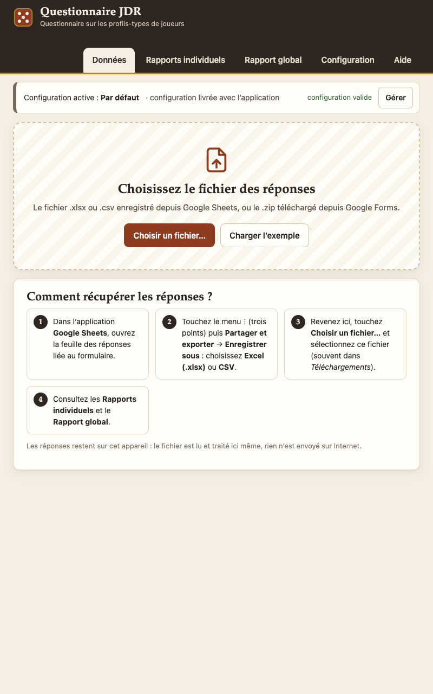
L’adresse de l’application n’est pas publiée et n’apparaît pas dans les moteurs de recherche. Ne la diffusez pas (pas sur un forum, pas dans un groupe de joueurs) : gardez-la pour vous et les personnes qui gèrent le questionnaire. Les joueurs n’en ont pas besoin, ils reçoivent leur rapport sous forme de fichier.
Le lien sert seulement à télécharger l’application elle-même. Le fichier des réponses que vous choisissez ensuite est lu et traité sur l’appareil uniquement : il n’est envoyé à aucun serveur, ni au site qui héberge l’application, ni à personne d’autre. La configuration et les réponses chargées sont gardées dans la mémoire de Chrome, sur cette tablette.
Quand une nouvelle version est publiée, vous n’avez rien à réinstaller. À l’ouverture suivante (avec une connexion), l’application la télécharge discrètement, puis affiche en bas de l’écran :
Touchez Recharger : la page se recharge avec la nouvelle version. Vos réponses chargées et votre configuration sont conservées. Si vous fermez le message avec la croix, la nouvelle version sera utilisée la prochaine fois que vous rouvrirez l’application.
Sur un téléphone, la rangée d’onglets glisse de côté avec le doigt. Tout fonctionne aussi en tenant la tablette à l’horizontale, qui donne plus de place aux rapports.
Touchez Charger l’exemple dans l’onglet Données : 30 réponses fictives sont chargées. Vous pouvez alors visiter tous les onglets. Quand vous aurez vos vraies réponses, touchez Changer de fichier….
Sur un ordinateur, le plus simple est d’ouvrir le même lien dans Chrome ou Edge : tout fonctionne de la même façon, et Chrome/Edge proposent aussi « Installer l’application ». On peut aussi utiliser l’application sans Internet du tout, à partir d’un fichier compressé, par exemple QuestionnaireJDR.zip :
QuestionnaireJDR qu’il contient.Questionnaire JDR.html. L’application s’ouvre dans votre navigateur (Microsoft Edge ou Google Chrome de préférence ; Firefox et Safari fonctionnent aussi, avec une petite différence pour l’enregistrement, voir 7.8).Quand on double-clique sur un .zip, Windows en montre le contenu comme s’il s’agissait d’un dossier, mais ce n’en est pas un : l’application s’ouvrirait incomplète et ne pourrait rien enregistrer. Faites toujours Extraire tout… d’abord, puis travaillez dans le dossier extrait.
Pour retrouver l’application facilement, faites un clic droit sur Questionnaire JDR.html → Envoyer vers → Bureau (créer un raccourci).
| Élément | Rôle |
|---|---|
Questionnaire JDR.html | L’application. C’est le seul fichier à ouvrir (index.html est la même page, utilisée par la version en ligne). |
configuration/ | Les fichiers de configuration (questions, points, textes des rapports). Voir parties 7 et 8. |
documentation/ | Ce guide (guide.html) et ses images. |
exemples/ | Un fichier de réponses fictives pour essayer. |
app/ | Le moteur de l’application. Ne rien modifier ici (les autres petits fichiers, comme sw.js ou manifest.webmanifest, servent à la version en ligne). |
Gardez ces éléments ensemble : si vous déplacez l’application, déplacez tout le dossier QuestionnaireJDR.
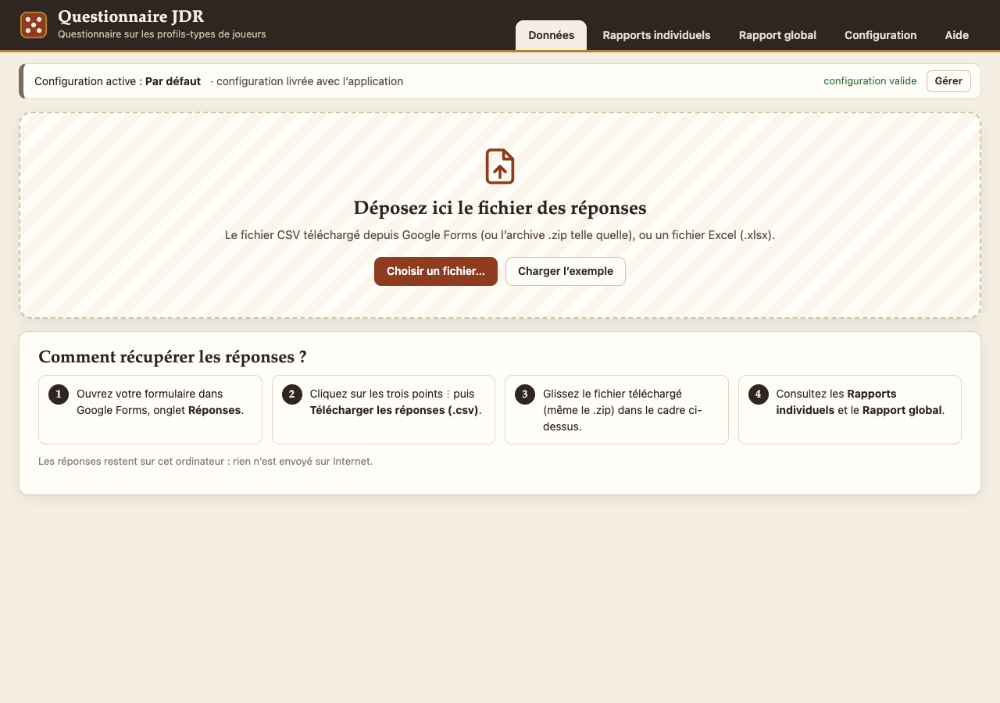
Les réponses au formulaire Google sont rangées dans une feuille de calcul Google Sheets associée au formulaire. Il faut en faire un fichier que l’application lira : un classeur Excel (.xlsx) ou un fichier .csv.
Les libellés exacts peuvent varier un peu d’une version de Google Sheets à l’autre. Cherchez ce qui ressemble à « Partager et exporter », « Enregistrer sous », « Exporter » ou « Télécharger », puis le format Excel ou CSV : les deux conviennent. Si Sheets vous propose « Envoyer une copie », choisissez plutôt « Enregistrer sous » : le but est d’avoir le fichier sur la tablette.
Google Forms permet aussi de télécharger toutes les réponses reçues dans un seul fichier.
.csv ou une archive .zip qui contient le .csv : les deux conviennent tels quels, inutile de décompresser.Vous pouvez ensuite ouvrir l’application sur l’ordinateur, ou vous envoyer ce fichier (e-mail, Google Drive…) pour l’ouvrir sur la tablette.
L’application lit les fichiers .csv (et .txt, .tsv), les archives .zip de Google Forms, et les classeurs Excel .xlsx (par exemple depuis Google Sheets sur ordinateur : Fichier → Télécharger → Microsoft Excel (.xlsx)). Seule la première feuille d’un classeur est lue. Les anciens formats .xls et .ods ne sont pas acceptés : un message vous le dira.
Gardez le fichier tel que Google l’a produit. Si vous l’ouvrez dans Excel et que vous l’enregistrez à nouveau, Excel change parfois le séparateur et les accents. L’application s’en sort en général (voir partie 9), mais le fichier d’origine est le plus sûr.
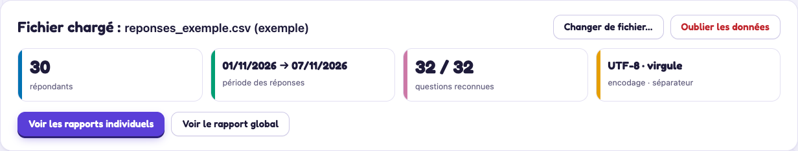
Les boutons Changer de fichier… et Oublier les données permettent de charger un autre fichier ou de retirer les réponses de l’application (le fichier d’origine n’est pas touché).
Dans le sélecteur d’Android, touchez le menu (☰ ou ⋮) pour parcourir les autres emplacements : Téléchargements, Drive, la mémoire de la tablette… Un fichier resté uniquement dans Google Drive peut aussi être choisi depuis l’entrée « Drive » du sélecteur.
Le fichier chargé et la configuration en cours sont mémorisés par le navigateur, sur cet appareil (tablette ou ordinateur). Si vous fermez l’application et la rouvrez, vous retrouvez tout. Un fichier très volumineux peut ne pas être mémorisé : un message vous prévient alors qu’il faudra le recharger la prochaine fois.
Sous le résumé, l’application compare le fichier à la configuration (les questions et réponses qu’elle connaît). Quand tout correspond, un message vert « Tout est en ordre » s’affiche. Avec le fichier d’exemple, il n’y a qu’une simple information, parce qu’un répondant a laissé une question vide :
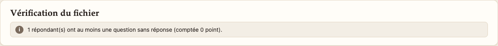
Quand quelque chose ne correspond pas, des avertissements orange apparaissent. Voici ce qu’ils veulent dire et ce qu’il faut faire.
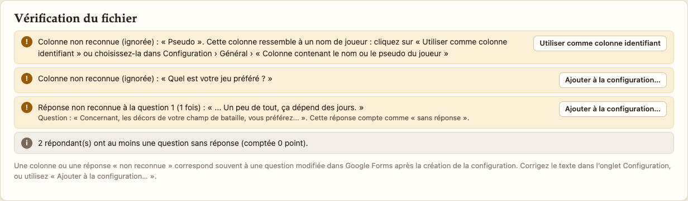
| Message | Signification et quoi faire |
|---|---|
| Colonne non reconnue (ignorée) : « … » | Le fichier contient une colonne qui ne correspond à aucune question de la configuration. Elle est simplement ignorée. • Si le message ajoute « Cette colonne ressemble à un nom de joueur » (colonne « Pseudo », « Nom », « Prénom », « Adresse e-mail »… ou colonne dont toutes les valeurs sont différentes) : ce n’est pas une question. Cliquez sur Utiliser comme colonne identifiant pour qu’elle serve de nom dans les rapports (ou choisissez-la dans Configuration → Général ; voir la question « Répondant 3 »). L’application ne propose pas de l’ajouter comme question. • Si c’est une vraie question que vous avez ajoutée ou reformulée dans Google Forms : voir 7.6. Le bouton Ajouter à la configuration… vous y mène directement. |
| Question N absente du fichier : « … » | La configuration connaît une question que le fichier ne contient pas (vous l’avez supprimée du formulaire, ou le fichier est ancien). Tout le monde a 0 point à cette question. Si la question n’existe plus, supprimez-la aussi de la configuration (7.6). |
| Réponse non reconnue à la question N (k fois) : « … » | Un joueur a donné une réponse dont le texte ne correspond à aucune réponse connue pour cette question (souvent : réponse reformulée dans Google Forms, ou choix « Autre » en texte libre). Elle compte comme « sans réponse » (0 point). Corrigez le texte de la réponse dans la configuration, ou ajoutez-la avec Ajouter à la configuration… puis donnez-lui des points. |
| Colonne de date « Horodateur » introuvable | Les dates ne seront pas affichées, rien de grave. Le nom de cette colonne se règle dans Général. |
| Colonne d’identifiant « … » introuvable | Vous avez indiqué un nom de colonne pour le pseudo (dans Général) mais le fichier ne la contient pas. Les joueurs s’appelleront « Répondant 1 », « Répondant 2 »… Vérifiez l’orthographe exacte du titre de la colonne. |
| Question présente plusieurs fois dans le fichier | Deux colonnes du fichier ont le même intitulé. Seule la première est utilisée. |
| N répondant(s) ont au moins une question sans réponse (information) | Simple information : une question laissée vide, ou non reconnue, vaut 0 point. Le rapport de ces joueurs le mentionne. |
La comparaison des textes est tolérante : majuscules, espaces, accents, apostrophes droites ou courbes, points de suspension et ponctuation finale ne comptent pas. Seul un vrai changement de mots empêche la reconnaissance.
L’onglet Rapports individuels montre le rapport de chaque joueur, tel qu’il le recevra.
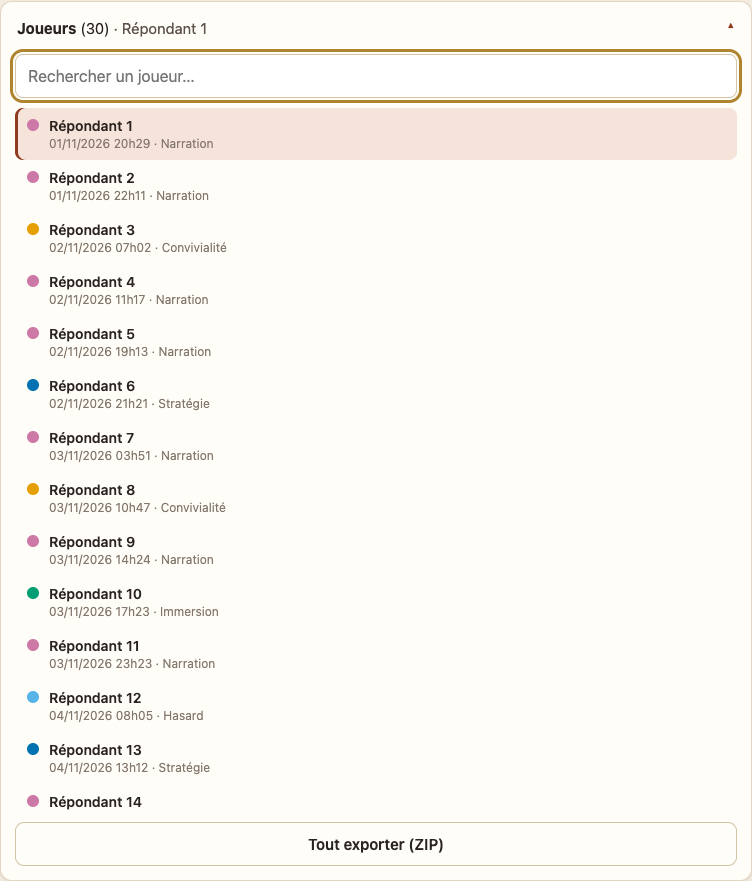
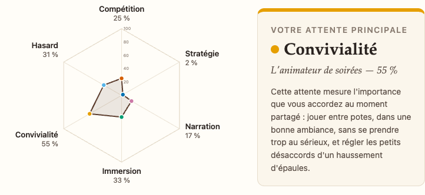
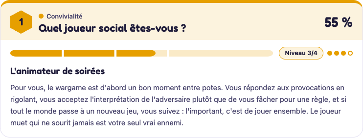
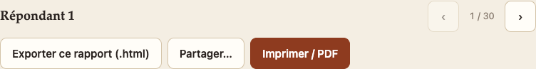
Rapport - Nom du joueur.html.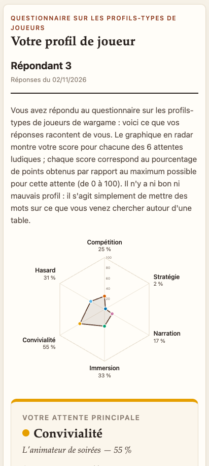
Le bouton Partager… n’apparaît que si l’appareil sait partager des fichiers (c’est le cas de Chrome sur Android). Sinon, ou si vous préférez : touchez Exporter ce rapport (.html) ; le fichier est enregistré dans Téléchargements, d’où vous pouvez l’envoyer comme n’importe quelle pièce jointe.
Rapport - Nom du joueur.html dans votre dossier Téléchargements (ou vous demande où l’enregistrer).Touchez Imprimer / PDF.
Chrome bloque parfois les nouveaux onglets. Autorisez-les pour cette application si Chrome le propose, ou passez par Exporter ce rapport (.html) : ouvrez le fichier téléchargé dans Chrome, puis menu ⋮ → Partager… → Imprimer.
Le bouton Tout exporter (ZIP), sous la liste, crée l’archive Rapports individuels.zip qui contient un fichier .html par joueur. Sur un ordinateur, décompressez-la (clic droit → Extraire tout…) pour obtenir tous les rapports dans un dossier. Sur la tablette, l’application Fichiers (ou « Files by Google ») sait ouvrir et extraire un .zip ; pour envoyer les rapports un par un, le bouton Partager… est plus simple.
Les fichiers portent le nom du joueur tel qu’il apparaît dans la liste. Pour avoir des pseudos plutôt que « Répondant 1 », « Répondant 2 »…, voir la question dédiée dans la partie 9.
L’onglet Rapport global rassemble toutes les réponses en une synthèse destinée à vous, le créateur du questionnaire. Les boutons en haut : Exporter le rapport (.html) (un fichier complet, qui inclut aussi tous les rapports individuels à la fin), Partager… (sur tablette : l’envoyer par e-mail, WhatsApp, Drive…), Exporter les scores (.csv pour Excel) (un tableau des scores, voir plus bas) et Imprimer / PDF (même fonctionnement que pour un rapport individuel, voir 4).
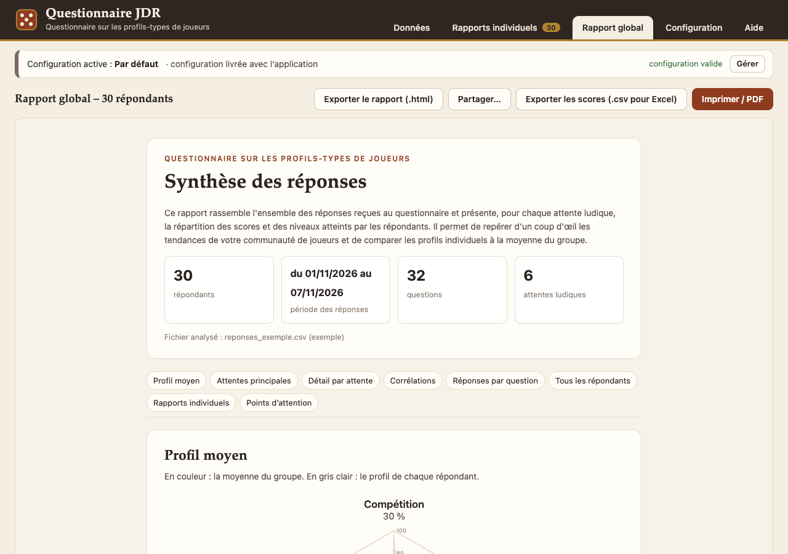
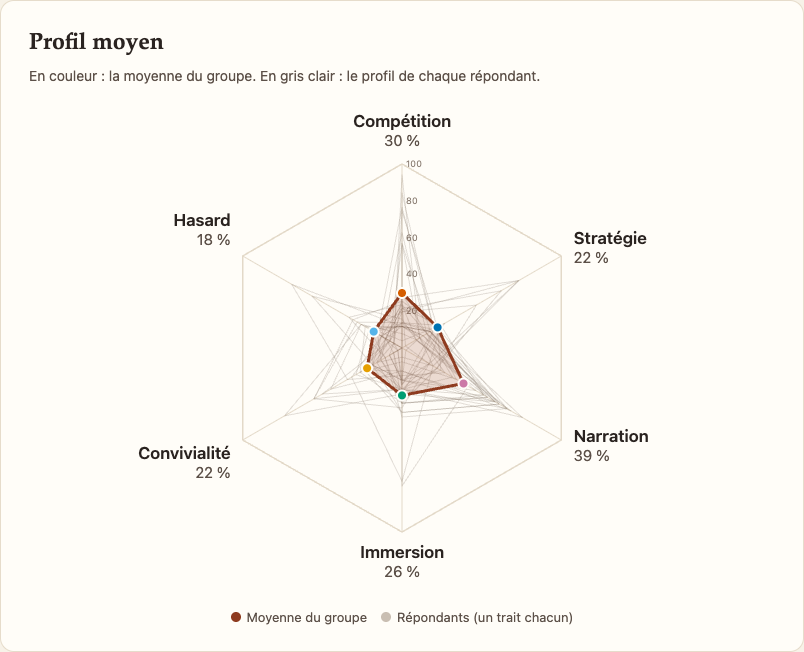
Le même radar que dans les rapports individuels, mais pour le groupe entier : la forme en couleur relie la moyenne des scores de chaque attente ; chaque fin trait gris est un répondant.
Lecture : les axes où la forme colorée s’étire sont les attentes fortes dans votre communauté ; les traits gris montrent si les joueurs se ressemblent (traits groupés) ou non (traits très dispersés).
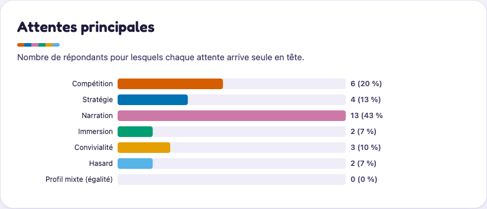
Pour chaque attente, le nombre de joueurs chez qui elle arrive seule en tête. « Profil mixte (égalité) » compte les joueurs qui ont deux attentes (ou plus) à égalité au premier rang ; le détail de ces égalités est listé dessous.
C’est la façon la plus simple de répondre à « quel type de joueurs ai-je dans mon club ? ».
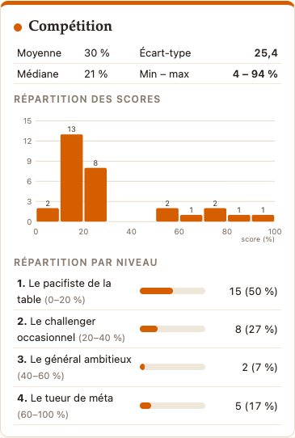
Un bloc par attente, avec quelques chiffres et deux graphiques. Les chiffres, en mots simples :
Répartition des scores (histogramme) : les scores sont regroupés par tranches de 10 points (0 à 10, 10 à 20, …, 90 à 100) ; la hauteur de chaque barre est le nombre de joueurs dans la tranche. On voit d’un coup d’œil si les scores sont groupés (une grosse bosse) ou étalés (plusieurs bosses, ou un plateau).
Répartition par niveau : le nombre (et le pourcentage) de joueurs dans chaque niveau de l’attente, avec la plage de scores de chaque niveau entre parenthèses.
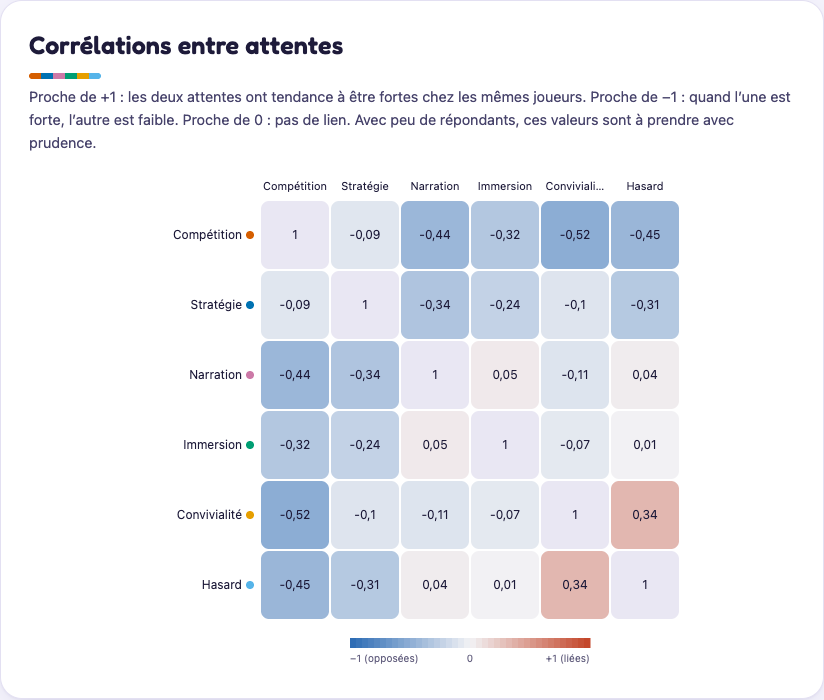
Une corrélation dit si deux attentes « vont ensemble » chez vos joueurs. Chaque case contient un nombre entre −1 et +1 :
La diagonale vaut toujours 1 (une attente comparée à elle-même).
Avec une dizaine de répondants, une corrélation peut être le fruit du hasard. Considérez ces chiffres comme des pistes, pas comme des certitudes, tant que vous n’avez pas quelques dizaines de réponses. Et une corrélation ne dit pas qu’une attente « cause » l’autre.
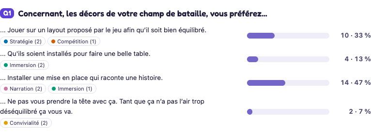
Pour chaque question : combien de joueurs ont choisi chaque réponse, et les attentes (avec les points) que cette réponse alimente. Une réponse que personne ne choisit, ou que tout le monde choisit, n’apporte pas d’information : c’est une bonne piste pour améliorer le questionnaire.
Un tableau avec, pour chaque joueur, la date, le score de chaque attente et l’attente principale. Cliquez sur un titre de colonne pour trier (par exemple pour trouver les plus « compétiteurs »), et sur un nom pour sauter à son rapport individuel, inclus à la fin du rapport global.
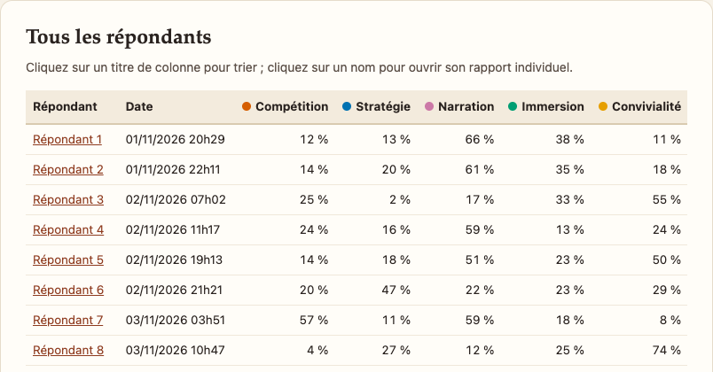
Le bouton Exporter les scores (.csv pour Excel) crée Scores des répondants.csv. Un double-clic l’ouvre dans Excel, avec une ligne par joueur et les colonnes : Répondant, Date, le score (%) de chaque attente, le niveau atteint pour chaque attente, Attente(s) principale(s), Questions sans réponse. Pratique pour faire vos propres tris ou graphiques.
Le principe tient en trois lignes : chaque réponse donne des points à une ou plusieurs attentes ; on additionne les points obtenus par le joueur pour chaque attente ; on les compare au maximum possible pour obtenir un pourcentage.
Dans la configuration, chaque réponse possible à chaque question indique combien de points elle donne à chaque attente. Dans la configuration livrée : 2 = la réponse soutient fortement l’attente, 1 = un peu, 0 (ou rien) = aucun lien. Une réponse peut alimenter plusieurs attentes à la fois.
Exemple, pour l’attente Compétition, avec les trois premières questions de la configuration livrée :
| Question | Réponses possibles | Points Compétition |
|---|---|---|
| Q1 – Concernant les décors de votre champ de bataille, vous préférez… | … un layout proposé par le jeu afin qu’il soit bien équilibré | 1 |
| … qu’ils soient installés pour faire une belle table | 0 | |
| … une mise en place qui raconte une histoire | 0 | |
| … ne pas vous prendre la tête avec ça | 0 | |
| Q2 – Votre adversaire semble plus intéressé par discuter avec vous… | … pas de souci, c’est un bon pote | 0 |
| … vous voudriez faire une partie sérieuse | 0 | |
| … vous en profitez pour lui mettre une pâtée ! | 2 | |
| … vous redirigez la conversation sur la table | 0 | |
| Q3 – Vous avez un désaccord sur une règle… | … vous acceptez l’interprétation de l’adversaire | 0 |
| … vous allez directement voir dans les règles | 2 | |
| … vous jouez ça aux dés | 0 | |
| … une vraie armée n’agirait jamais comme ça | 0 |
Pour chaque question, on retient la meilleure réponse possible pour l’attente (celle qui donne le plus de points). Le maximum de l’attente est la somme de ces meilleures réponses sur toutes les questions. Avec nos trois questions : Q1 → 1 point au mieux, Q2 → 2, Q3 → 2, soit un maximum de 5 points pour Compétition.
Dans l’application, la ligne « maximum de la question » apparaît sous chaque tableau de points, et le tableau Points maximum possibles en haut de Questions et poids donne le total pour chaque attente :
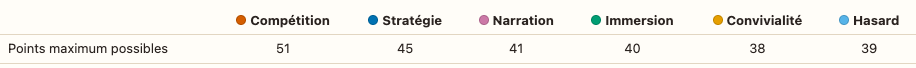
Imaginons un joueur qui répond : Q1 « un layout proposé par le jeu » (1 point), Q2 « c’est un bon pote » (0 point), Q3 « vous allez voir dans les règles » (2 points).
| Points obtenus | Maximum possible | |
|---|---|---|
| Q1 | 1 | 1 |
| Q2 | 0 | 2 |
| Q3 | 2 | 2 |
| Total | 3 | 5 |
Score Compétition = 3 ÷ 5 = 60 %. Le score est toujours compris entre 0 et 100 %, quel que soit le nombre de questions. On fait le même calcul pour chaque attente.
Une question laissée vide, ou dont la réponse n’est pas reconnue, donne 0 point mais le maximum ne change pas : le score baisse donc un peu. Le rapport du joueur le signale (« 1 question sans réponse… »).
Chaque attente a plusieurs niveaux, du plus faible au plus fort. Chaque niveau commence « à partir de » un score en % ; le joueur est dans le dernier niveau dont le seuil est atteint ou dépassé. Pour Compétition, la configuration livrée a quatre niveaux :
| Niveau | À partir de | Donc pour un score… |
|---|---|---|
| 1. Le pacifiste de la table | 0 % | de 0 à 19,9 % |
| 2. Le challenger occasionnel | 20 % | de 20 à 39,9 % |
| 3. Le général ambitieux | 40 % | de 40 à 59,9 % |
| 4. Le tueur de méta | 60 % | de 60 à 100 % |
Notre joueur à 60 % atteint tout juste le niveau 4 : son rapport affichera « Niveau 4/4 », le titre « Le tueur de méta » et le texte correspondant. À 55 %, il aurait été « Le général ambitieux ».
C’est l’attente qui a le score le plus élevé. En cas d’égalité parfaite, le rapport parle de profil mixte et cite toutes les attentes à égalité. Si tous les scores sont à 0 (joueur qui n’a répondu à rien), l’encart indique qu’il n’y a pas assez de réponses.
Les points de chaque réponse, les seuils des niveaux, leur nombre et leurs textes : tout cela se modifie dans l’onglet Configuration, voir la partie suivante. Et comme les scores sont des pourcentages du maximum, vous pouvez ajouter ou retirer des questions sans « casser » les niveaux.
L’onglet Configuration permet de modifier tout ce qui fait le questionnaire et les rapports, sans toucher à un fichier. Chaque changement est appliqué immédiatement aux rapports : vous pouvez aller voir le résultat dans les autres onglets, puis revenir.
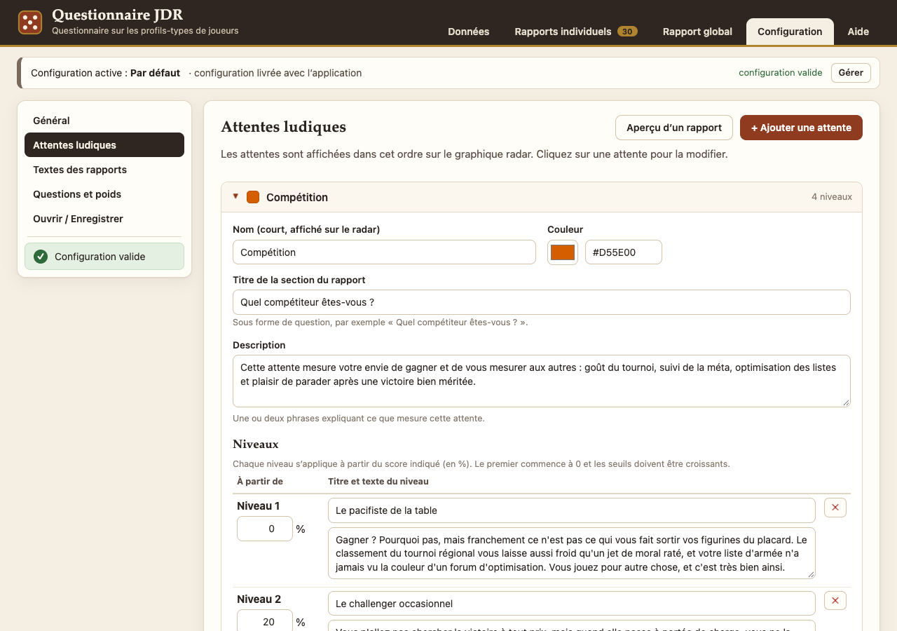
configuration, en charger une autre, ou revenir à la configuration livrée.Dès que vous changez quelque chose, le bandeau du haut passe à « Modifiée – non enregistrée ». L’application garde vos modifications en mémoire sur cet ordinateur, mais pour les conserver durablement (ou les transmettre), il faut les enregistrer dans le dossier : voir 7.8. Le bouton Aperçu d’un rapport (dans Attentes ludiques et Textes des rapports) montre à tout moment un rapport avec les réglages en cours.
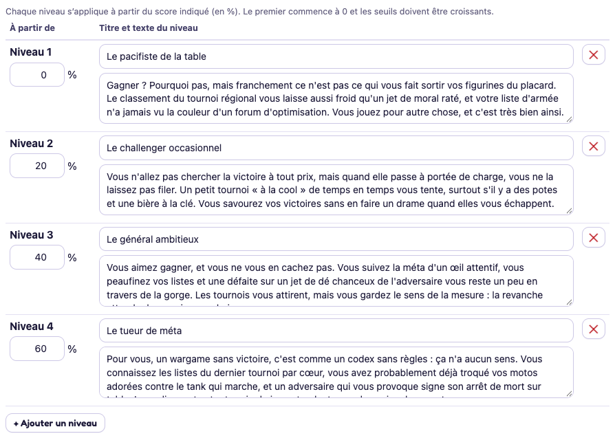
Dans le même tableau, la case À partir de de chaque niveau indique le score minimal (en %) pour l’atteindre. Tapez simplement une autre valeur. Trois règles, vérifiées en direct :
Si une règle n’est pas respectée, un message rouge l’explique et l’encadré de gauche compte les erreurs. Les rapports (badges « Niveau 2/4 », textes affichés, répartition par niveau du rapport global) changent aussitôt.
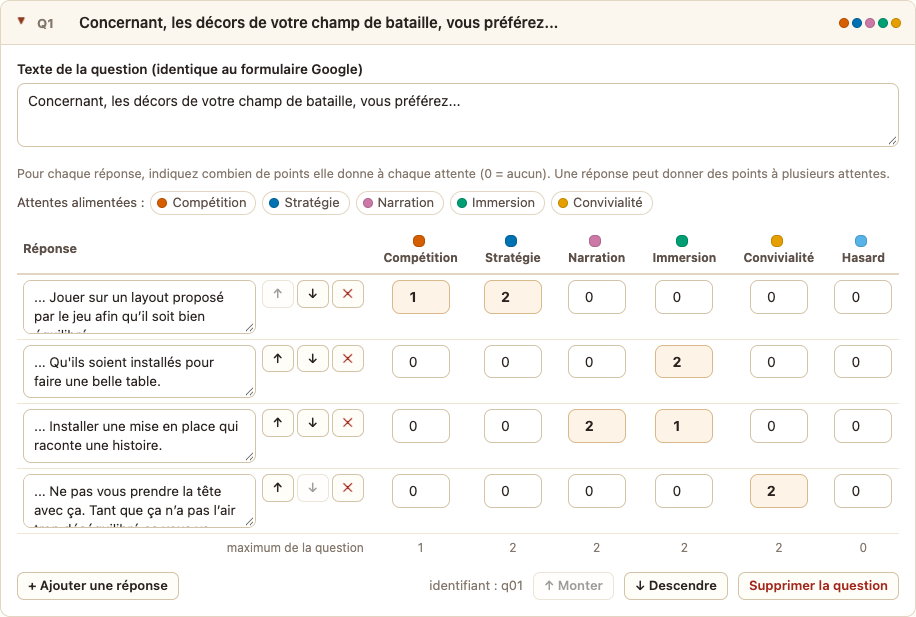
Changer un poids change les scores et parfois les niveaux de tous les joueurs. Si vous avez déjà envoyé des rapports, les nouveaux ne seront plus identiques.
Une réponse qui ne donne de points à aucune attente déclenche une remarque (pas une erreur) : c’est permis, mais souvent un oubli.
Pour supprimer un niveau, cliquez sur la croix rouge ✕ à droite de sa ligne (il doit toujours rester au moins un niveau). Après une suppression, pensez à vérifier que le premier niveau est bien à 0.
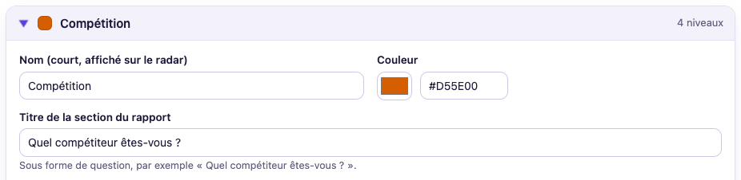
… la nouvelle attente est en erreur (« aucune réponse ne lui donne de points, son score ne peut pas être calculé ») et apparaît « — » dans les rapports. C’est normal : l’erreur disparaît dès que vous avez saisi des points.
Deux détails utiles, dans Paramètres avancés au bas de l’attente :
configuration/attentes. Il est proposé automatiquement ; vous pouvez le changer, les points des questions suivent.Trois situations, selon ce que vous avez fait dans Google Forms.
Dans Questions et poids, dépliez la question et corrigez son texte (ou celui de la réponse) pour qu’il soit identique à celui du formulaire. Les points sont conservés. Rappel : majuscules, espaces, accents et apostrophes ne comptent pas, seuls les mots importent.
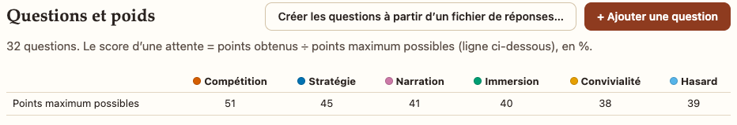
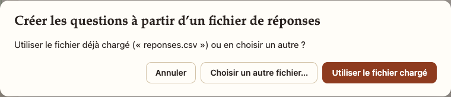
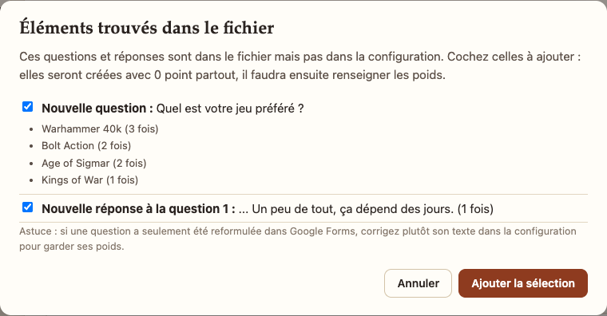
Le même bouton Créer les questions à partir d’un fichier de réponses… accepte n’importe quel fichier de réponses, même avec une seule ligne : répondez vous-même une fois à votre nouveau formulaire, téléchargez les réponses, et toutes les questions sont créées d’un coup. Il ne restera que les points à saisir.
Dans Questions et poids : + Ajouter une question crée une question « Nouvelle question » avec deux réponses ; modifiez les textes, ajoutez des réponses avec + Ajouter une réponse, saisissez les points. Le texte doit être exactement celui du formulaire Google, sinon la colonne ne sera pas reconnue. Supprimer la question la retire (avec confirmation) ; ↑ Monter / ↓ Descendre changent l’ordre d’affichage dans le rapport global.
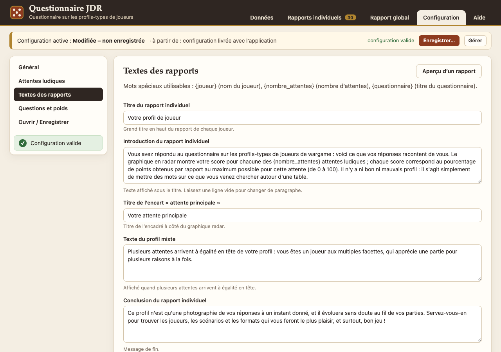
La section Textes des rapports regroupe le titre et l’introduction du rapport individuel, le titre de l’encart « attente principale », le texte affiché en cas de profil mixte, la conclusion, le pied de page, ainsi que le titre et l’introduction du rapport global.
Trois mots spéciaux, écrits entre accolades, sont remplacés automatiquement :
| Mot spécial | Remplacé par |
|---|---|
{joueur} | le nom (ou pseudo) du joueur – vide dans le rapport global |
{nombre_attentes} | le nombre d’attentes ludiques (6 dans la configuration livrée) |
{questionnaire} | le titre du questionnaire (section Général) |
Exemple : « Bonjour {joueur}, voici votre profil pour le {questionnaire}. » devient « Bonjour Grimgor, voici votre profil pour le Questionnaire sur les profils-types de joueurs. » Ces mots fonctionnent dans tous les textes de cette section et dans les textes des niveaux ; ils ne sont pas remplacés dans les noms, titres et descriptions des attentes, ni dans les titres des niveaux.
La configuration est un petit ensemble de fichiers texte (voir partie 8), rangés dans un dossier configuration ou dans un fichier configuration.zip. Enregistrer, c’est écrire vos réglages dans ces fichiers.
Bonne nouvelle d’abord : Chrome mémorise de lui-même vos modifications sur la tablette. Si vous fermez l’application et la rouvrez, vous retrouvez votre configuration, même modifiée. Enregistrer sert donc à garder une sauvegarde (au cas où la mémoire de Chrome serait effacée), à la transmettre à quelqu’un ou à la reprendre sur un autre appareil.
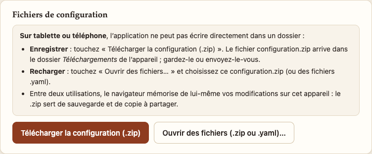
configuration.zip est enregistré dans Téléchargements. Le bandeau passe à Fichiers.configuration 2026-11.zip), envoyez-le-vous par e-mail ou copiez-le dans Google Drive : c’est votre sauvegarde.Pour recharger une configuration (la vôtre, ou une configuration reçue) : touchez Ouvrir des fichiers (.zip ou .yaml)… et choisissez le configuration.zip. Inutile de le décompresser. Sur la tablette, il n’y a pas de dossier à choisir ni de fichier à glisser : tout passe par ce fichier .zip.
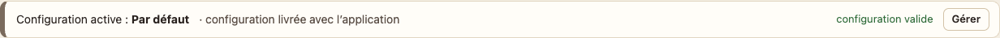
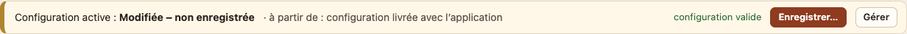
| Le bandeau affiche | Ce que cela veut dire |
|---|---|
| Vous utilisez la configuration intégrée à l’application, telle qu’elle a été livrée. Rien n’a été modifié. | |
La configuration a été lue depuis (ou enregistrée dans) le dossier configuration, et n’a pas été modifiée depuis. Vous êtes à jour. | |
| Même chose, mais la configuration vient de fichiers ouverts un par un ou d’un fichier .zip (cas des navigateurs sans accès direct au dossier). | |
| Vous avez changé quelque chose depuis le dernier chargement ou enregistrement. Les changements sont gardés en mémoire sur cet ordinateur, mais pas encore écrits dans le dossier. Le bouton Enregistrer… apparaît dans le bandeau. |
À droite, « configuration valide », « N remarques » ou « N erreurs » résume la vérification ; Gérer ouvre directement la section Ouvrir / Enregistrer.
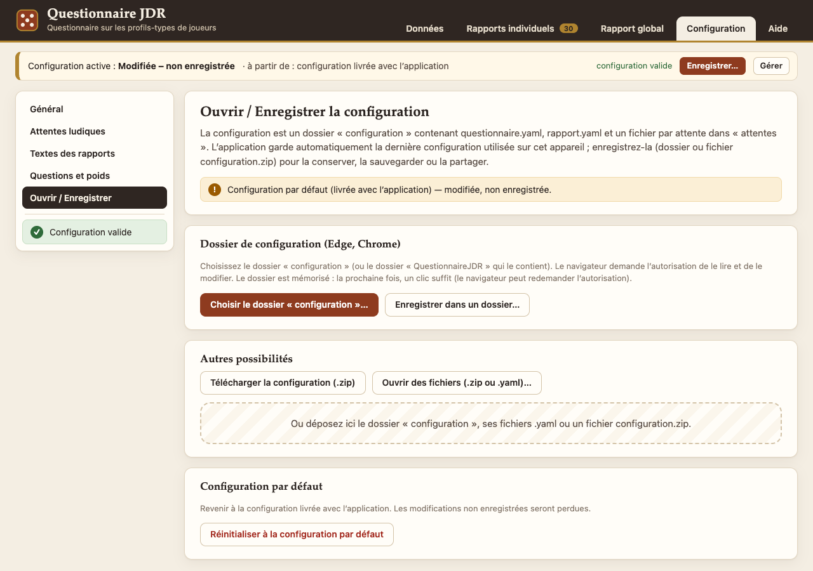
configuration qui se trouve dans QuestionnaireJDR (choisir QuestionnaireJDR lui-même fonctionne aussi), puis Sélectionner un dossier.Le dossier est mémorisé : les fois suivantes, un clic sur Enregistrer… (bandeau) ou Enregistrer dans le dossier « configuration » suffit. Le navigateur peut redemander l’autorisation après une fermeture : c’est une sécurité normale, cliquez à nouveau sur Autoriser. Rien ne quitte votre ordinateur.
Il permet d’enregistrer dans un autre dossier que celui mémorisé : pratique pour faire une copie de sauvegarde (créez un dossier vide, par exemple configuration – sauvegarde 2026-11, et enregistrez dedans) ou pour préparer une configuration à envoyer à quelqu’un.
Ces navigateurs ne savent pas écrire directement dans un dossier. La section Ouvrir / Enregistrer est alors un peu différente :
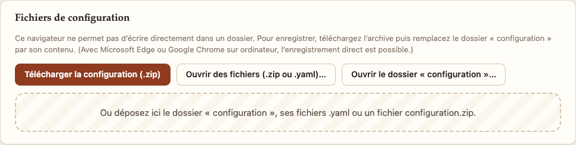
configuration.zip arrive dans Téléchargements.configuration.QuestionnaireJDR, renommez l’ancien dossier configuration (par exemple en configuration – ancien) ou supprimez-le, puis déposez le nouveau à sa place.Pour rouvrir une configuration dans ces navigateurs : Ouvrir le dossier « configuration »… (sélectionnez le dossier), Ouvrir des fichiers (.zip ou .yaml)… (sélectionnez les fichiers ou le .zip), ou déposez le dossier ou le .zip dans la zone pointillée. Dans Edge et Chrome, le dossier se choisit avec Choisir le dossier « configuration »… (plus haut) : le bouton « Ouvrir le dossier… » n’y est pas affiché, mais les fichiers et le dépôt dans la zone pointillée fonctionnent aussi.
configuration à l’ouverture : un navigateur n’a pas le droit de lire vos fichiers sans que vous le demandiez.Le bouton Réinitialiser à la configuration par défaut (en bas de Ouvrir / Enregistrer) remet la configuration intégrée, après confirmation. Vos modifications non enregistrées sont perdues ; les fichiers du dossier configuration, eux, ne sont pas touchés tant que vous n’enregistrez pas par-dessus.
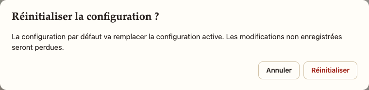
Si la configuration contient des erreurs (seuils incohérents, attente sans points…), l’application vous le dit au moment d’enregistrer, mais vous laisse le faire : vous pourrez corriger plus tard.
Tout ce que fait l’onglet Configuration peut aussi se faire en éditant directement les fichiers du dossier configuration. C’est utile pour relire tous les textes d’un coup, ou pour un gros chantier de réécriture. Si vous préférez les écrans de l’application, vous pouvez sauter cette partie.
| Fichier | Contenu |
|---|---|
configuration/questionnaire.yaml | Le titre, les noms des colonnes « pseudo » et « date », la liste des attentes (dans l’ordre du radar), puis toutes les questions avec leurs réponses et leurs points. |
configuration/rapport.yaml | Les textes généraux des rapports (titre, introduction, conclusion…). |
configuration/attentes/competition.yaml, strategie.yaml, … | Un fichier par attente : nom, couleur, titre, description et niveaux (seuil, titre, texte). |
Ce sont des fichiers texte au format YAML. Chacun commence par un commentaire (lignes débutant par #) qui explique son contenu. Pour les ouvrir : clic droit sur le fichier → Ouvrir avec → Bloc-notes. (Un éditeur gratuit comme Notepad++ ou Visual Studio Code est plus confortable, avec la coloration et les numéros de ligne, mais le Bloc-notes suffit.)
nom: valeur — avec un espace après les deux-points.- ."…". Pour un texte long sur plusieurs lignes, écrivez texte: >- puis le texte sur les lignes suivantes, décalé ; les lignes sont recollées en un paragraphe, et une ligne vide fait un nouveau paragraphe.# sont des commentaires, ignorés par l’application.Exemple : un niveau dans le fichier d’une attente, et une question dans questionnaire.yaml.
# Dans configuration/attentes/competition.yaml
niveaux:
- a_partir_de: 0
titre: "Le pacifiste de la table"
texte: >-
Gagner ? Pourquoi pas, mais franchement ce n'est pas ce qui vous
fait sortir vos figurines du placard.
- a_partir_de: 20
titre: "Le challenger occasionnel"
texte: >-
Vous n'allez pas chercher la victoire à tout prix…
# Dans configuration/questionnaire.yaml
questions:
- id: q03
texte: "Vous avez un désaccord sur une règle pendant une partie..."
reponses:
- texte: "...Vous allez directement voir dans les règles."
poids: { competition: 2, strategie: 1 }
- texte: "...Vous jouez ça aux dés."
poids: { hasard: 2 }Les identifiants entre accolades dans poids sont les identifiants techniques des attentes (le nom du fichier dans attentes/, sans .yaml). Une attente absente des accolades vaut 0 point.
" à l’intérieur d’un texte entre guillemets casse la lecture : utilisez plutôt les guillemets français « » ou une apostrophe.Comme expliqué en 7.8, l’application ne relit pas les fichiers toute seule. Après avoir modifié et enregistré un fichier :
questionnaire.yaml, donc ignoré) sont affichées mais la configuration se charge.Quand l’application enregistre, elle réécrit entièrement les fichiers avec sa propre présentation et ses commentaires d’en-tête standard : les commentaires ou la mise en page que vous auriez ajoutés à la main sont remplacés. Le contenu (textes, seuils, points) est, lui, conservé à l’identique.
Google Forms n’enregistre pas de nom par défaut. Deux étapes :
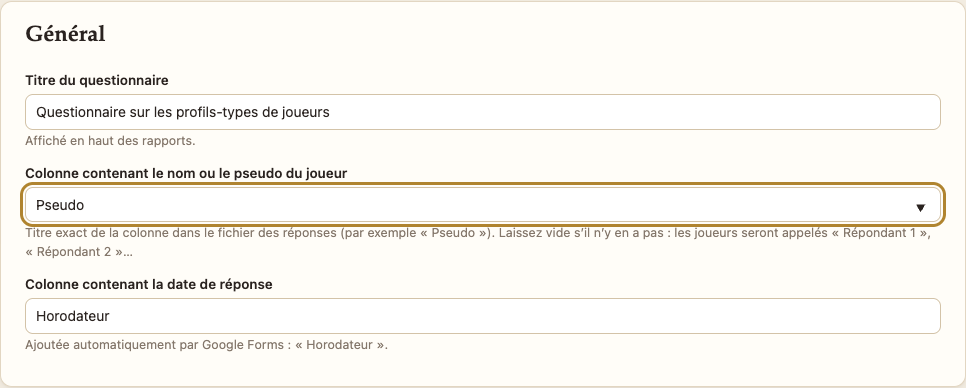
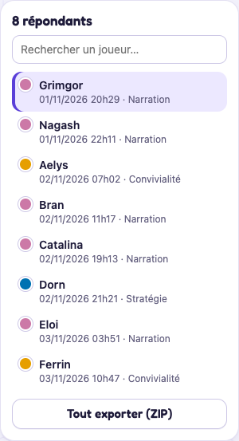
Tant que ce réglage n’est pas fait, la colonne « Pseudo » est signalée dans l’onglet Données comme « ressemble à un nom de joueur » : le bouton Utiliser comme colonne identifiant fait ce réglage en un clic. Ne l’ajoutez pas comme question.
Les joueurs qui ont répondu avant l’ajout de la question, ou qui ont laissé la case vide, restent « Répondant n ».
Pensez à enregistrer la configuration pour conserver ce réglage (7.8).
Oui, après la première ouverture du lien (le message « disponible hors connexion » le confirme). Vous pouvez ensuite l’ouvrir depuis son icône, en avion ou dans une salle de jeu sans réseau : charger un fichier, consulter et exporter les rapports, modifier la configuration. Seules les mises à jour attendent le retour de la connexion. Le partage par WhatsApp ou e-mail part, lui, quand la tablette retrouve le réseau.
Vérifiez que le lien est ouvert dans Chrome lui-même (et non dans l’aperçu intégré de Gmail ou de WhatsApp : utilisez « Ouvrir dans Chrome »). Le menu ⋮ de Chrome propose alors l’une ou l’autre entrée, parfois sous Ajouter à…. Sans installation, l’application fonctionne quand même : ajoutez simplement le lien à vos favoris.
Touchez Recharger. Si l’application est ouverte dans plusieurs onglets, fermez les autres : la nouvelle version s’installe quand tous les onglets de l’application ont été rechargés ou fermés. Vos données et votre configuration ne sont pas touchées par une mise à jour.
Dans le dossier Téléchargements (« Download »), visible dans l’application Fichiers d’Android, et depuis Chrome : menu ⋮ → Téléchargements. Chrome affiche aussi un petit message en bas de l’écran à chaque téléchargement, avec un bouton Ouvrir.
L’application reconnaît automatiquement les deux encodages courants (UTF-8 de Google, « windows-1252 » d’Excel) ; le résumé de l’onglet Données indique celui qu’elle a détecté. Si des caractères restent abîmés, le fichier a probablement été ouvert puis réenregistré dans un logiciel qui a mélangé les deux. Le plus simple : retéléchargez le fichier depuis Google Forms (partie 2) et chargez-le tel quel.
En général non : Excel en français enregistre avec des points-virgules et en windows-1252, et l’application lit les deux (le résumé affiche alors « windows-1252 · point-virgule »). Vous pouvez aussi enregistrer en .xlsx, qui est accepté. Évitez seulement les formats .xls (ancien Excel) et .ods, refusés. En cas de doute, retéléchargez l’original.
Oui. Avec Edge ou Chrome, l’accès à un dossier de votre ordinateur demande toujours votre accord : une première fois pour lire (« Afficher les fichiers »), une autre pour écrire (« Enregistrer les modifications »), et parfois à nouveau après une fermeture du navigateur. Cliquez sur Autoriser : l’application n’accède qu’à ce dossier, et rien n’est envoyé sur Internet. Si vous refusez, un message « Accès au dossier refusé » ou « Autorisation d’écriture refusée » s’affiche : recommencez et acceptez, ou utilisez le téléchargement du .zip (7.8).
Le dossier a sans doute été déplacé, renommé ou supprimé depuis que l’application l’a mémorisé. Cliquez sur Choisir un autre dossier… et sélectionnez-le à son nouvel emplacement.
Vérifications, dans l’ordre : (1) le bandeau indique-t-il « Par défaut » ? Quelqu’un a peut-être cliqué sur « Réinitialiser » ; rechargez le dossier avec Recharger depuis « configuration », si vous aviez enregistré. (2) Vous utilisez un autre navigateur ou un autre ordinateur : la mémoire de l’application est propre à chacun ; rechargez le dossier. (3) Les données de navigation ont été effacées (nettoyage des cookies et du site) : même remède. Moralité : enregistrez régulièrement dans le dossier, et gardez-en une copie de sauvegarde.
Aucune réponse de la configuration ne donne de points à cette attente (le tableau « Points maximum possibles » affiche 0 en rouge). Cela arrive après l’ajout d’une attente, ou si on a mis tous ses poids à 0. Donnez-lui des points dans Questions et poids (7.3).
Vérifiez que vous avez bien pris le fichier téléchargé depuis l’onglet Réponses de Google Forms, et non le formulaire lui-même ou un lien. Si c’est un .zip, il doit contenir un .csv (ou .xlsx). Le message « n’est pas pris en charge » concerne les formats .xls, .ods ou .numbers : réenregistrez en CSV ou en .xlsx.
Sur la tablette : vérifiez que vous utilisez Chrome à jour, puis rechargez la page (tirez l’écran vers le bas, ou menu ⋮ → ⟳). Sur un ordinateur : ouvrez Questionnaire JDR.html avec Microsoft Edge, Google Chrome ou Firefox (clic droit → Ouvrir avec), pas avec un autre programme. Vérifiez que vous l’ouvrez depuis le dossier extrait et non depuis l’intérieur du .zip (partie 1), et que les dossiers app, configuration et documentation sont toujours à côté du fichier.
Le fichier documentation/guide.html manque ou a été déplacé. Remettez le dossier documentation (avec son sous-dossier images) à côté de Questionnaire JDR.html. Vous pouvez aussi ouvrir ce guide directement par un double-clic sur guide.html.
Dans le dossier Téléchargements de votre navigateur (sauf si vous lui avez demandé de choisir l’emplacement à chaque fois), sur ordinateur comme sur tablette. Noms des fichiers : Rapport - Nom.html, Rapports individuels.zip, Rapport global.html, Scores des répondants.csv, configuration.zip.
Le rapport individuel ne contient que les réponses et scores du joueur concerné. En revanche, le rapport global exporté contient les scores (et les pseudos) de tout le monde, ainsi que tous les rapports individuels à la fin : ne le diffusez qu’aux personnes à qui il est destiné.
Envoyez-lui le dossier configuration (compressé en .zip : clic droit → Envoyer vers → Dossier compressé), ou utilisez Télécharger la configuration (.zip). Il la charge avec Ouvrir des fichiers (.zip ou .yaml)… ou en déposant le .zip dans la zone pointillée de Ouvrir / Enregistrer, puis l’enregistre dans son propre dossier.
Non. Le lien de l’application sert uniquement à télécharger l’application elle-même ; ensuite, tout se passe dans Chrome, sur la tablette (ou l’ordinateur). Le fichier des réponses est lu et traité sur l’appareil, il n’est envoyé à aucun serveur. Les réponses et la configuration restent dans la mémoire du navigateur, pour vous éviter de recharger. Pour les effacer de l’application, utilisez Oublier les données dans l’onglet Données. Seuls les fichiers que vous choisissez de partager (un rapport envoyé par WhatsApp, par exemple) quittent l’appareil.